지금 운영
번호를 인증하면 바로 프로필 단계로 넘어가요.
바뀐 뒤(alpha 확인)
같아요. 인증 응답에 '등록된 번호 아님'이 함께 와서 충돌 안내 없이 넘어가요.
카톡 결론(같은 번호로 다른 계정 인증은 불가능, 내 번호 다시 인증은 가능)대로 동작하는지, 첫 가입부터 같은 번호인 사람이 들어오는 경우까지 운영(지금)과 alpha(바뀐 뒤)를 같은 상태로 만들어 비교했어요. 두 곳 모두 서버에 쓰지 않고 응답을 브라우저 안에서 가로채 상태를 만들었어요(운영 쓰기 0, alpha 는 로그인 2회 외 쓰기 0). 항목마다 승인 / 수정 요청 / 이번 배포에서 빼기를 고르고 결과를 복사해 주세요.
| # | 상황 | 지금 운영 | 바뀐 뒤 |
|---|---|---|---|
| S1 | 처음 가입 — 새 번호 | 인증 뒤 바로 다음 단계 | 같음 |
| S2 | 로그인한 채로 번호 인증 — 내 번호 다시 / 남의 번호 | 남의 번호면 문장 하나뿐 | 다시 인증 허용 · 남의 번호면 출구 안내 |
| S3 | 이메일 가입 — 번호가 이미 다른 계정에 있음 | 마지막 '가입하고 계속'에서야 오류 | 인증 직후 카드 + 갈래 3개 |
| S4 | 이메일 가입 — 번호가 카카오 계정에 있음 → 카카오로 로그인 → 이메일 붙이기 | 카카오 계정에 이메일을 붙일 방법 없음 | 로그인하면 이메일 연결 단계로 한 번 자동 이동 |
| S5 | 카카오·애플 가입 — 번호가 이메일 계정에 있음 | '이메일 인증 뒤 다시' — 할 곳 없음 | 3단계 안내 → 로그인 → 자동 연결 |
| S6 | 카카오 가입 — 번호가 다른 카카오 계정에 있음 | '정보가 일치하지 않아요' 오류 | 같은 안내 → 원래 카카오로 로그인 |
| S7 | 번호를 쥔 계정이 탈퇴 신청 중 | '가입된 계정 없음' · 로그인 '잠시 후 다시' | 지금 쓰기(로그인·철회) / 기다리기(삭제일) |
| S8 | 번호로 계정 찾기 · 비밀번호 재설정 메일 | 카카오 계정도 이메일 카드로 표시 | 가입 수단에 맞는 안내 + '내 계정이 아닌가요?' |
| S9 | 설정 › 로그인 방법 | 화면 없음(404) | 카카오·애플·이메일 연결 상태와 연결하기 |
| S10 | 번호를 새로 받은 사람 · 관리자 번호 해제 | 갈 곳 없음 · 관리자 기능 없음 | 고객센터 안내 + 관리자 '휴대폰 번호 해제' |
| S11 | 개인정보처리방침 v1.7 — 7절(탈퇴) | 고객센터로 복구 요청만 | 직접 철회 · 자동 파기 · 유예 중 번호 사용 안내 |
변경 없음(회귀 확인) · 이번 배포
번호를 인증하면 바로 프로필 단계로 넘어가요.
같아요. 인증 응답에 '등록된 번호 아님'이 함께 와서 충돌 안내 없이 넘어가요.

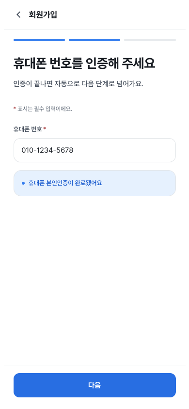
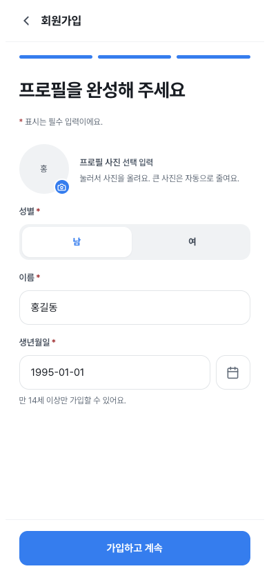
#2108 #2124 · 이번 배포
내 번호는 이미 인증된 것으로 인정돼요. 남의 번호면 '이미 다른 계정에서 사용 중인 번호예요' 문장만 나오고 갈 곳이 없어요.
내 번호는 그대로 인정돼요. 남의 번호면 '기존 계정으로 로그인' 같은 출구와 '번호를 최근에 새로 받았나요?' 안내가 나와요.
운영 화면은 문장 하나(캡처 생략) — 동작은 같고 출구만 없어요.
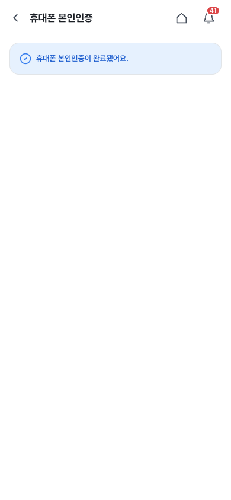
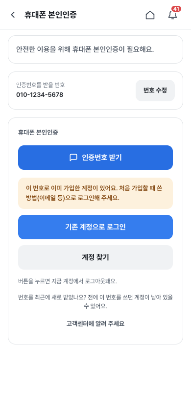
#2112 #2124 · 이번 배포
인증은 통과하고 이름·생년월일까지 다 적은 뒤 마지막 '가입하고 계속'에서야 이미 쓰는 번호라고 알려요.
인증 직후 '이 번호는 이미 가입돼 있어요' 카드가 떠요. 이메일로 가입했어요 / 카카오로 가입했어요 / 비밀번호가 기억나지 않아요 세 갈래와, 번호를 새로 받은 사람을 위한 고객센터 안내가 있어요.
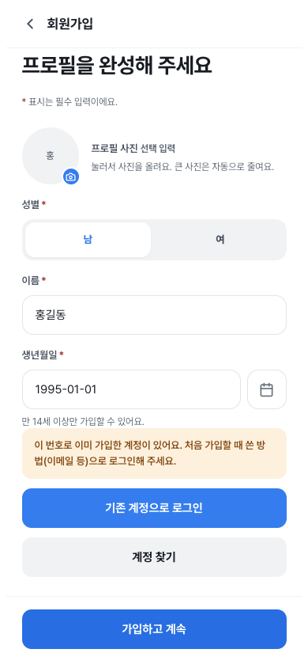
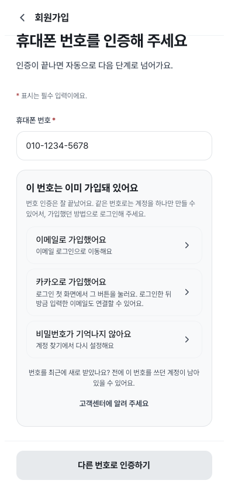
#2121 #2122 · 이번 배포
같은 번호의 카카오 계정이 있으면 가입할 수 없고, 카카오 계정에 이메일·비밀번호 로그인을 붙이는 기능이 없어요.
카드에서 '카카오로 가입했어요'를 누르고 카카오로 로그인하면, 방금 입력한 이메일이 채워진 '이메일 로그인 연결' 1단계로 한 번 이동해요. 메일 인증번호 → 비밀번호 → 완료. 비밀번호는 저장하지 않아 새로 정해요. 남이 쓰는 이메일이거나 로그인한 지 30분이 지나면 각각 안내해요.
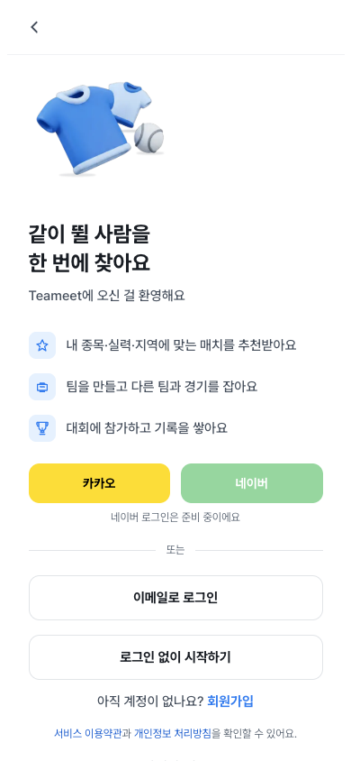
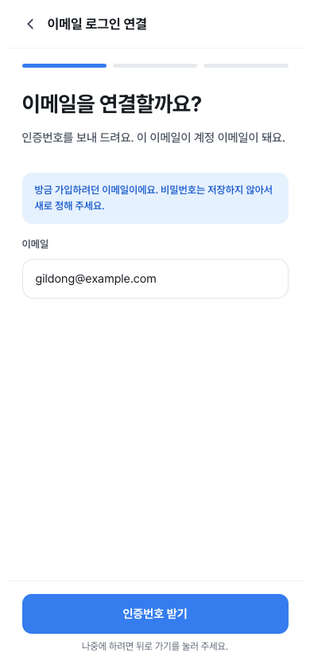
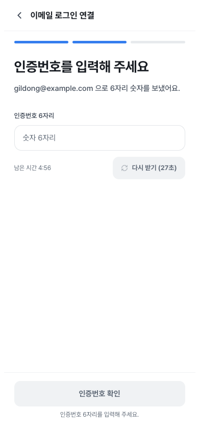
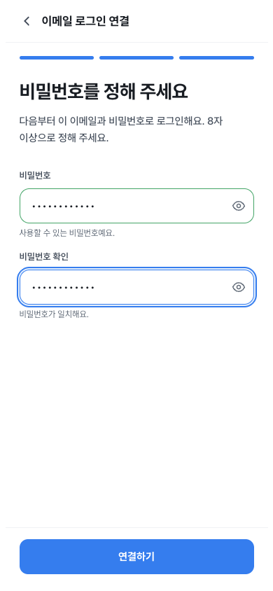
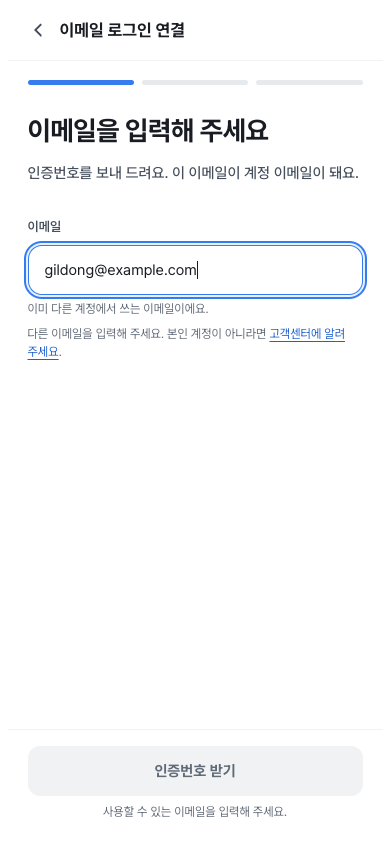
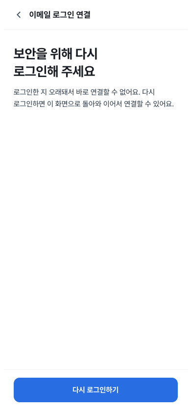
#2109 #2111 #2116 · 이번 배포
'기존 방법으로 로그인해 이메일 인증을 마친 뒤 다시 시도해 주세요'가 뜨는데, 이메일 인증을 할 화면이 없어 계속 막혀요.
'이미 팀밋 계정이 있어요' 3단계 안내가 떠요. 원래 계정에 로그인하면 30분 안에 카카오 로그인이 그 계정에 자동으로 붙고, 새 계정은 생기지 않아요.
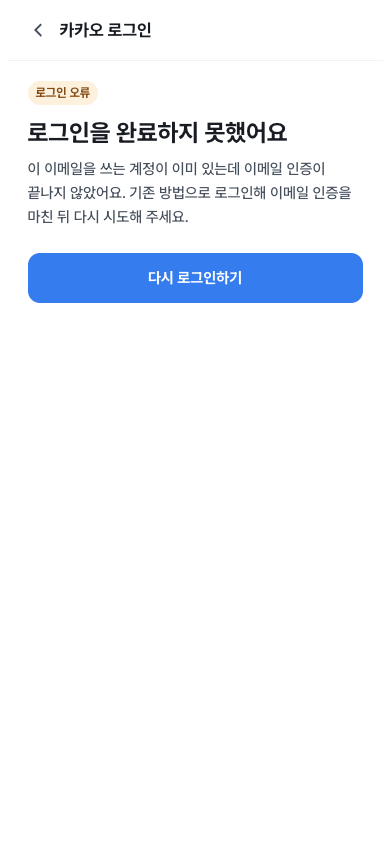
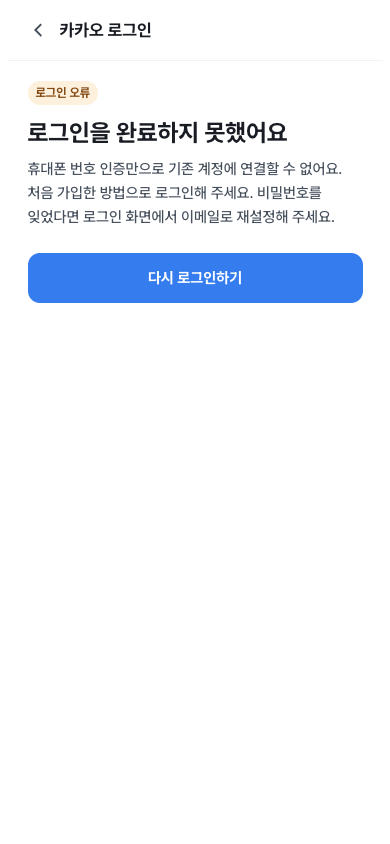

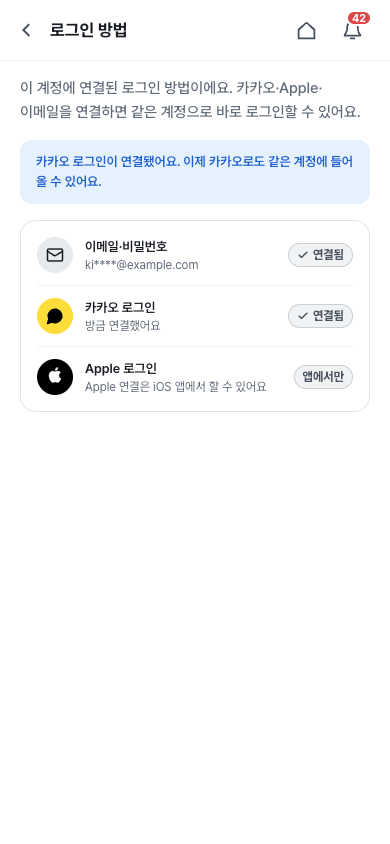
#2111 #2116 · 이번 배포
'카카오 정보와 기존 계정 정보가 일치하지 않아요' 오류만 떠요.
같은 3단계 안내가 뜨고, 원래 카카오로 로그인하면 '이미 카카오가 연결돼 있어요'로 끝나요(한 계정에 카카오는 하나).
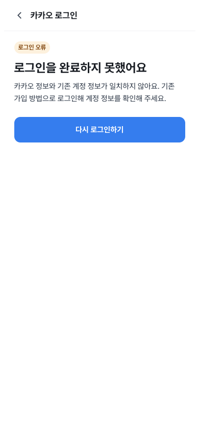
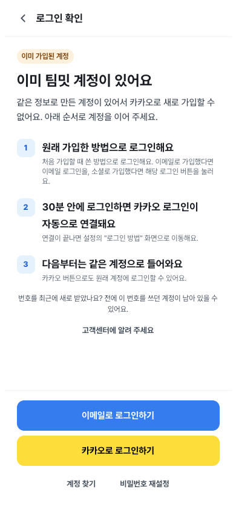
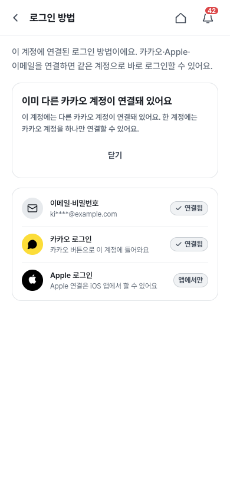
#2110 #2113 #2119 #2120 · 이번 배포
번호로 계정을 찾으면 '가입된 계정을 찾지 못했어요'(실제로는 있음), 로그인하면 '지금은 로그인할 수 없어요. 잠시 후 다시'만 나와요. 철회할 방법도 없고 번호는 계속 묶여요.
번호를 인증한 뒤에만 '탈퇴를 신청한 계정이에요'라고 알려 주고, 방법 1 지금 바로 쓰기(로그인 → 철회) / 방법 2 기다리기(삭제일 뒤 번호가 풀림)를 보여 줘요. 로그인하면 철회 화면으로 가고, 확인 창에서 빠진 팀·명단은 돌아오지 않는다고 알려요.
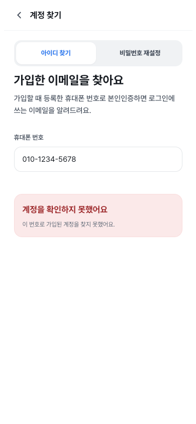
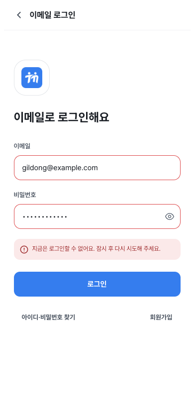
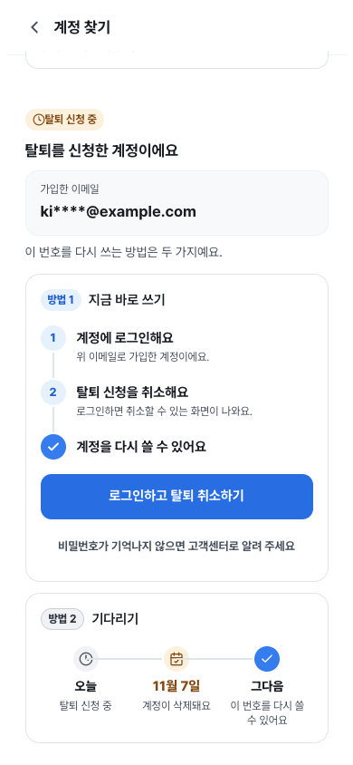
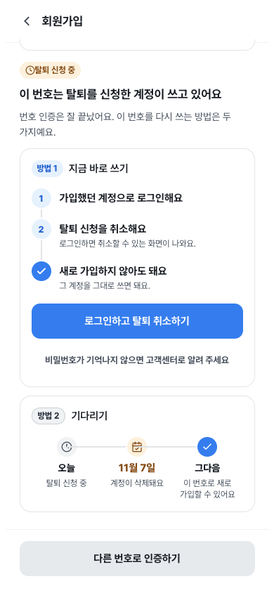
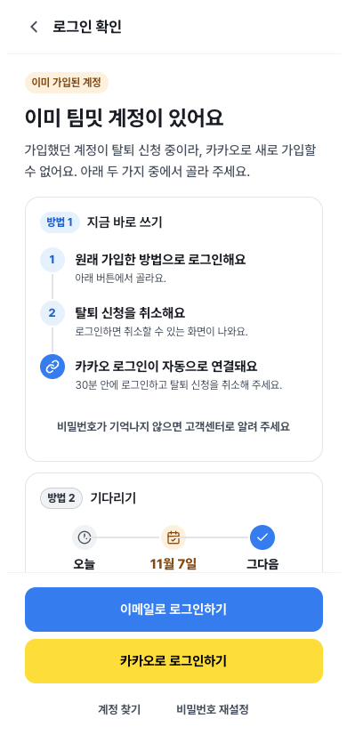
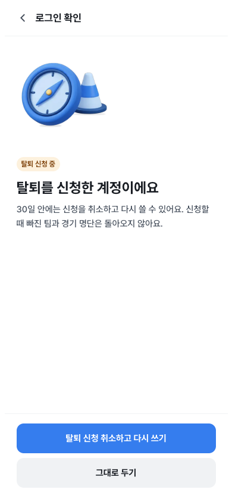
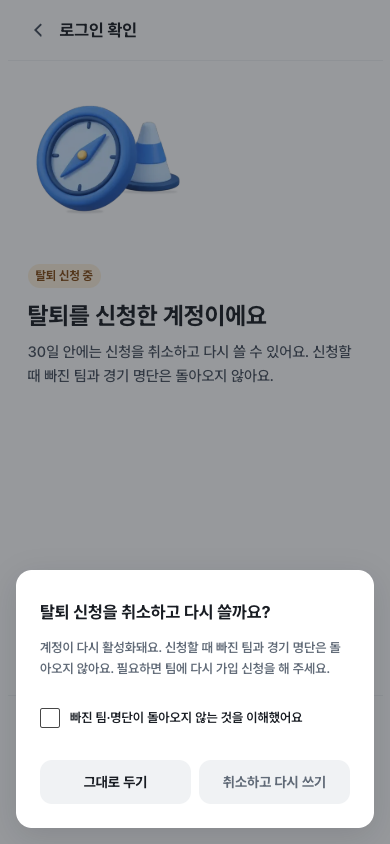
#2108 #2117 #2124 (메일은 #2107 로 이미 운영) · 이번 배포
카카오로 가입한 계정도 '가입한 이메일' 카드로 보여 줘요. 재설정 메일 요청 화면은 같고, 메일은 10/31 부터 실제로 나가요.
카카오 계정이면 카카오 로그인으로 안내하고(카카오 노란 버튼), 번호를 새로 받은 사람을 위한 '내 계정이 아닌가요?' 안내가 붙어요.
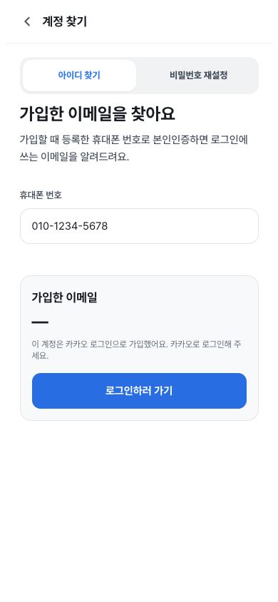
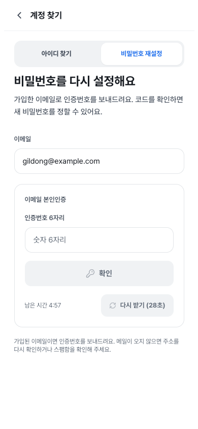
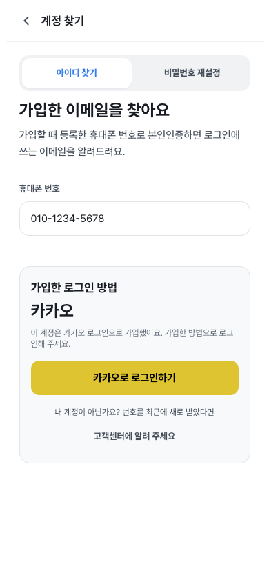
#2114 #2122 · 이번 배포
이 화면이 없어요(404). 로그인 수단을 보거나 붙일 곳이 없어요.
연결된 로그인 수단과 '카카오 연결하기' · '이메일 연결하기'가 보여요. 이름은 연결 전후 모두 '이메일·비밀번호'.
#2124 #2126 · 이번 배포
번호를 새로 받은 사람이 가입하면 '이미 가입된 번호'에서 막히고, 운영자도 번호만 풀어 줄 기능이 없어요(계정 삭제뿐).
번호 관련 막힘 화면 다섯 곳에 '번호를 최근에 새로 받았나요? → 고객센터에 알려 주세요'가 생겨요. 운영자는 회원 상세에서 사유를 적고 '휴대폰 번호 해제'를 해요. 기록이 남고, 이전 주인에게 알림이 가며, 그 계정은 다음에 번호를 다시 인증해야 해요.
운영에는 이 길이 없어요.
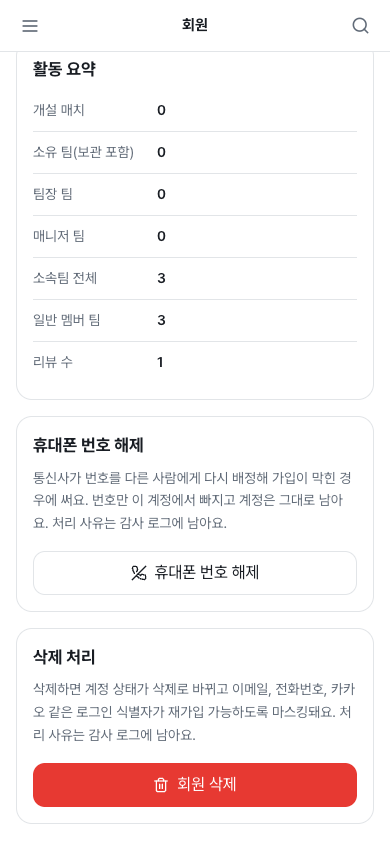
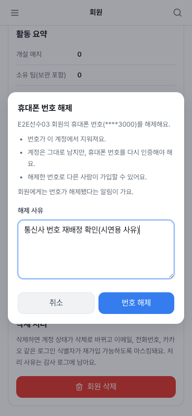
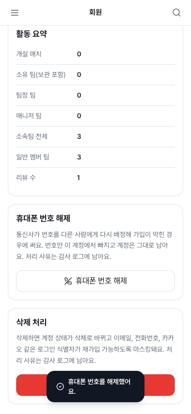
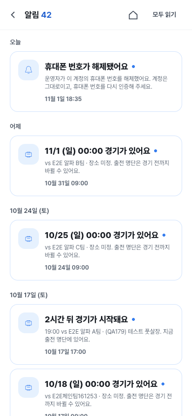
#2125 · 이번 배포
(v1.6) 회원이 탈퇴를 요청하면 30일의 유예기간 동안 계정을 삭제하지 않고 보관하며, 이 기간에는 고객센터를 통해 계정 복구를 요청할 수 있습니다. 유예기간이 지나면 계정과 개인정보를 파기합니다.
(v1.7) 회원이 탈퇴를 요청하면 30일의 유예기간 동안 계정을 삭제하지 않고 보관합니다. 유예기간에는 회원이 직접 로그인해 탈퇴 신청을 철회하거나, 고객센터를 통해 계정 복구를 요청할 수 있습니다. 철회하면 계정을 다시 이용할 수 있으나, 탈퇴 신청 때 정리된 팀 소속과 참가 명단은 자동으로 되돌아오지 않습니다. 유예기간에는 해당 계정에 등록된 이메일과 휴대전화번호로 새로 가입할 수 없습니다. 유예기간이 지나면 계정과 개인정보를 지체 없이 파기합니다. (재동의 필요 없음 — v1.4 와 같은 방식)
글 비교는 위 두 칸을 보세요.
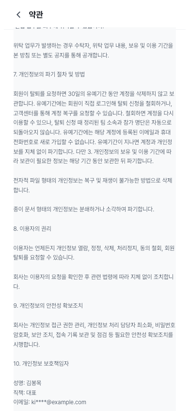
| 무엇 | PR | 근거 |
|---|---|---|
| 운영 메일 발송 권한(SES) | #2107 #2115 | 10/31 운영 적용, 실제 발송 확인 — 이미 운영에서 동작 |
| 메일 발송 실패를 Slack 으로 알림 | #2110 | 단위 시험 |
| 탈퇴 30일 뒤 자동 삭제(1시간마다, 한 번에 최대 20개, 관리자·팀 권한 계정은 사람 확인으로 넘김) + 삭제 때 카카오에서 받은 임시 값(이름·번호·생년월일)까지 지움 | #2119 | 단위 1553·실제 Postgres 통합 4, alpha 배포 뒤 삭제 0건 확인(탈퇴 대기 1건, 기한 11/21) |
| 연결 토큰 보안 — 처음 충돌한 계정에만 쓰이고 번호 인증 뒤에만 발급 | #2111 | 적대 리뷰 2회, 공용 PC 시나리오 차단 |
| 인증번호 용도 분리 — 프로필 이메일 인증 코드로 로그인 이메일을 붙일 수 없음 | #2121 | 마이그레이션 alpha 적용 확인, 우회 차단 시험 |
| "탈퇴 신청 중" 날짜는 번호 인증을 마친 뒤에만 응답 | #2119 | 인증 전 응답에 없음을 시험으로 확인 |
| alpha 배포가 CI 를 60분까지 기다림 | #2123 | 머지 뒤 첫 alpha 배포가 다시 실행 없이 성공 |